1
Installez EvCam sur le PC
L’installateur Windows ajoute la caméra virtuelle « EvCam » (applications 64 et 32 bits). Si votre PC n’a pas encore de micro virtuel, il vous propose de le raccorder — c’est expliqué plus bas.
EvCam crée une caméra virtuelle et un micro virtuel que Zoom, Teams, Discord, OBS ou Meet voient comme du vrai matériel. Sans fil, jusqu’en 1080p à 60 images par seconde, et la diffusion continue même téléphone en veille.
.exe pour votre PC Windows 10/11 · .apk pour votre téléphone Android 8+ · toujours la dernière version publiée
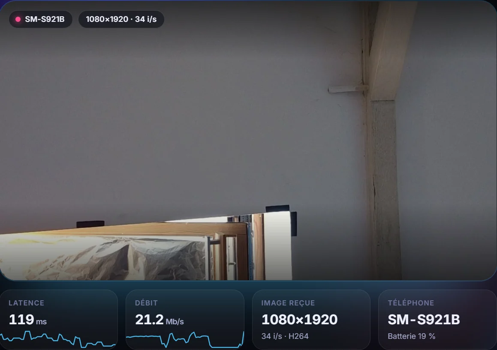
Pas de câble, pas de compte, pas de configuration compliquée : vous installez, vous scannez, vous choisissez « EvCam ».
L’installateur Windows ajoute la caméra virtuelle « EvCam » (applications 64 et 32 bits). Si votre PC n’a pas encore de micro virtuel, il vous propose de le raccorder — c’est expliqué plus bas.
Ouvrez l’appli Android EvCam (ou l’appareil photo de n’importe quel téléphone) et visez le QR code affiché sur le PC. La diffusion démarre toute seule.
Dans Zoom, Teams, Discord, OBS ou Meet, sélectionnez la caméra « EvCam » et le micro « EvCam Micro ». C’est tout.
Une interface sombre, claire et sans menus cachés. Voici chaque écran de l’application, tel qu’il s’affiche sur le PC. Cliquez sur une image pour l’agrandir.
Au premier lancement, EvCam résume l’essentiel en trois cartes : la caméra virtuelle « EvCam » à choisir dans vos applications, le micro du téléphone qui devient « EvCam Micro », et le fonctionnement sans fil — rien à installer côté téléphone, il suffit de scanner un QR code.
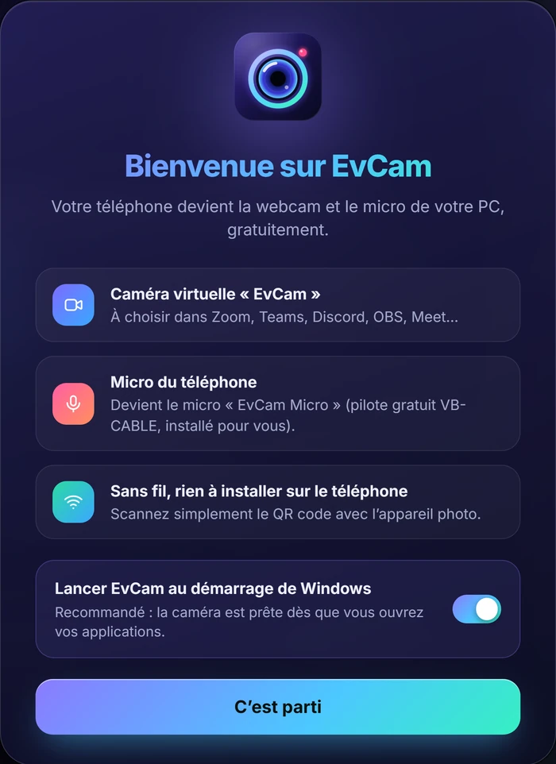
L’écran d’accueil de l’application affiche un grand QR code, l’adresse locale du PC et un code d’appairage. Trois étapes illustrées : même Wi-Fi, scan du QR code, autorisation de la caméra et du micro.
Capture : le QR code, l’adresse réseau et le code d’appairage ont été masqués en rouge.
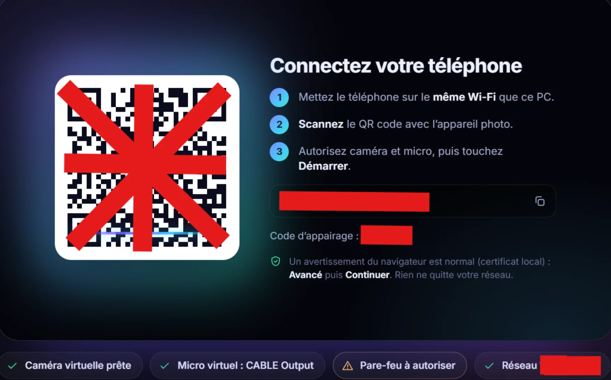
Dès que le téléphone est connecté, l’aperçu prend toute la place. Deux pastilles indiquent le modèle du téléphone et la résolution diffusée ; quatre tuiles dessous donnent la santé de la liaison.
L’onglet « Caméra » commence par l’état de la caméra virtuelle (« EvCam », 1920×1080, 60 i/s, badge « Prête »), puis enchaîne les réglages en boutons segmentés faciles à toucher.
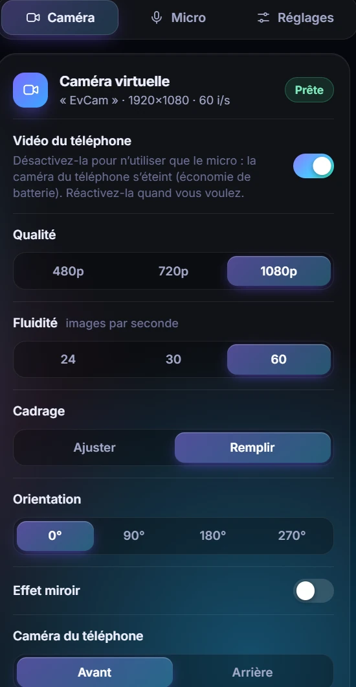
EvCam liste les objectifs que le téléphone expose (ici « 4 objectifs détectés ») et ajoute un vrai travail sur le champ de vision.
Honnêteté : le dézoom numérique ne montre pas plus de décor que l’objectif n’en voit ; la vraie ultra grand-angle dépend de ce que le téléphone expose.
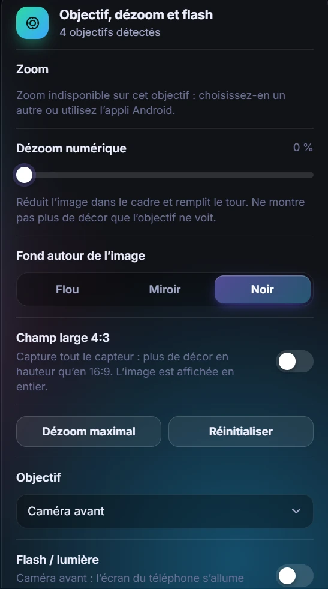
La carte « Batterie du téléphone » affiche le niveau en direct, l’état (« Normal » ou « Économie ») et deux leviers très efficaces.
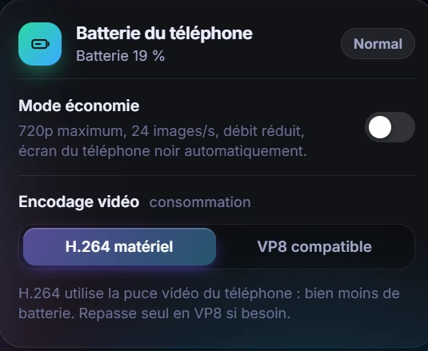
La carte « Micro du téléphone » indique d’où vient le son (« Reçu de SM-S921B »), affiche un vumètre en décibels et regroupe les réglages qui comptent.
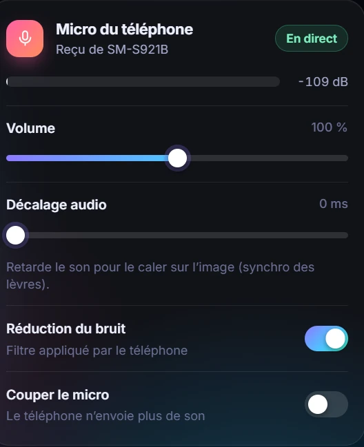
La carte « Micro virtuel » transforme le son reçu en un vrai micro Windows. Le badge « Prêt » confirme que tout est en place, et l’application vous dit quel nom choisir.
Vous n’avez pas encore de micro virtuel ? Voyez comment EvCam vous le raccorde.
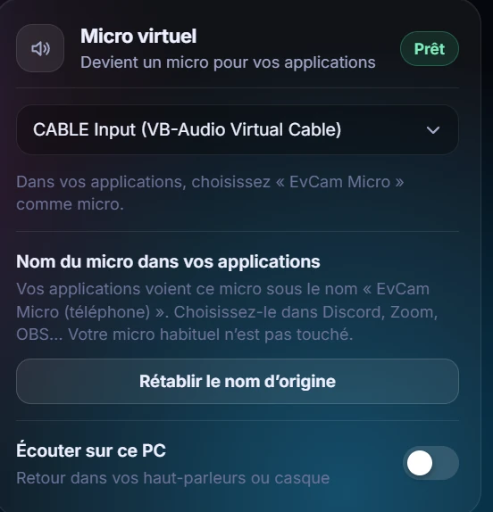
L’onglet « Réglages » contient une carte « Diagnostic » pour vérifier que tout fonctionne — sans toucher au PC.
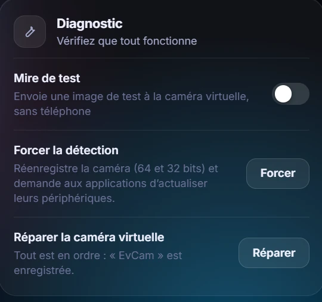
La carte « Connexion » règle tout ce qui touche au réseau local, avec des explications claires à chaque ligne.
Capture : le réseau et le port ont été masqués en rouge.
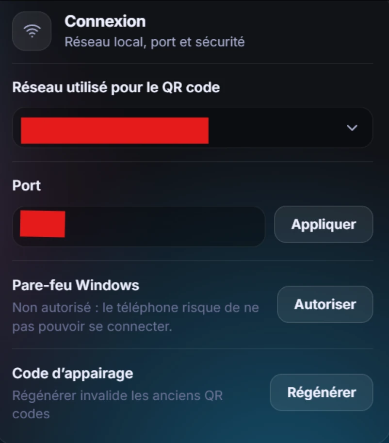
La carte « Démarrage » décide du comportement au lancement, et de ce que fait la croix de la fenêtre.
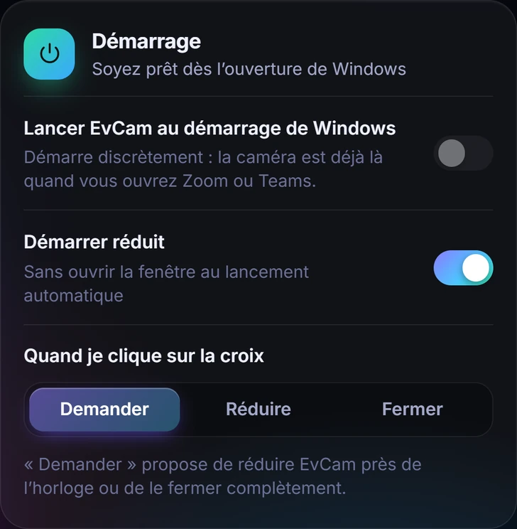
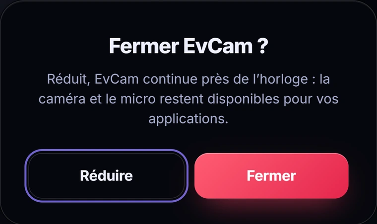
Verrouillez le téléphone ou passez sur une autre application : l’appli Android garde la diffusion active grâce à un service de premier plan, et le micro reste actif.
À savoir : autoriser EvCam à tourner en arrière-plan consomme un peu plus de batterie. Sur iPhone ou dans un navigateur, le système fige la page écran éteint : gardez l’écran allumé (l’option « écran noir » économise la batterie).
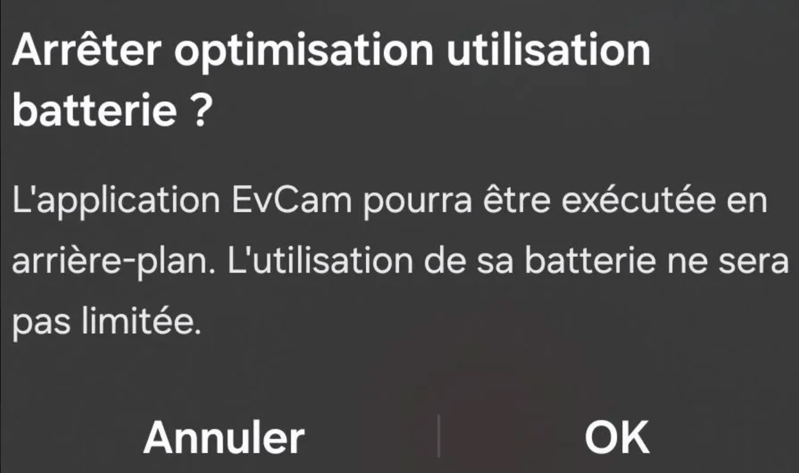
Windows n’autorise un micro virtuel qu’avec un pilote signé par Microsoft. EvCam s’appuie donc sur VB-CABLE, un pilote gratuit de VB-Audio, et vous évite toute la corvée : l’installateur vous propose simplement le raccord vers le téléchargement officiel.
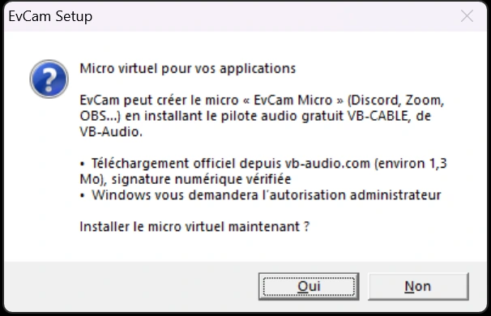
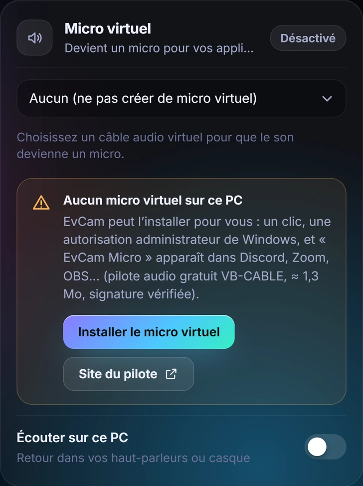
VB-CABLE est un logiciel de VB-Audio (donationware). EvCam ne le redistribue pas : il le télécharge, avec votre accord, depuis le site de son auteur. Si vous l’appréciez, pensez à le soutenir.
EvCam apparaît comme une vraie caméra et un vrai micro : aucune application à configurer en particulier.
Installateur classique, sans droits administrateur par défaut. Caméra virtuelle compatible avec les applications 64 et 32 bits.
Appli dédiée (APK) : scan du QR code, reconnexion automatique, vérification du certificat du PC, diffusion en veille.
Rien à installer : scannez le QR code avec l’appareil photo et ouvrez la page. Gardez l’écran allumé pendant la diffusion.
Gratuit, sans compte, sans publicité. Les fichiers sont ceux de la dernière version publiée sur GitHub.
Windows peut afficher « Windows a protégé votre PC » : l’installateur n’est pas signé numériquement (un certificat est payant). Cliquez sur Informations complémentaires puis Exécuter quand même. Si le pare-feu le demande, cliquez sur Autoriser.
Ouvrez le fichier et autorisez « Installer des applications inconnues » pour la source utilisée (réglage Android, une seule fois). Ouvrez EvCam, autorisez caméra et micro, puis scannez le QR code du PC.
Oui : gratuit, sans publicité, sans compte. Le code est ouvert sur GitHub (licence MIT).
Non. Le téléphone envoie l’image et le son directement au PC, sur votre réseau Wi-Fi local. Le QR code contient un jeton d’appairage et l’empreinte du certificat du PC, que l’appli Android vérifie : rien ne sort de votre réseau.
Windows ne permet de créer un micro virtuel qu’avec un pilote signé par Microsoft, ce qu’EvCam ne peut pas fournir. VB-CABLE en est un, gratuit. EvCam vous propose de le raccorder depuis le site officiel de VB-Audio, uniquement si vous ne l’avez pas déjà, et le renomme « EvCam Micro » sans jamais toucher à votre micro habituel.
Discord ne relit sa liste de caméras qu’au démarrage. Dans EvCam, onglet Caméra puis la carte Discord : « Redémarrer Discord », ou « Forcer la détection » dans les réglages. EvCam doit être ouvert (la barre système suffit).
Vérifiez que le téléphone et le PC sont sur le même Wi-Fi, qu’EvCam est ouvert, et que le pare-feu Windows est autorisé (bouton « Autoriser » dans les réglages). Désactivez aussi l’« isolation des clients » du Wi-Fi invité si votre box en propose une.
L’application Caméra du Microsoft Store ne liste pas les caméras virtuelles de ce type. Utilisez EvCam dans un navigateur, Zoom, Teams, OBS, Discord…
Oui : l’interrupteur « Vidéo du téléphone » éteint la caméra du téléphone (pas de voyant, bien moins de batterie) et seul le micro est envoyé. Réactivez la vidéo quand vous voulez.